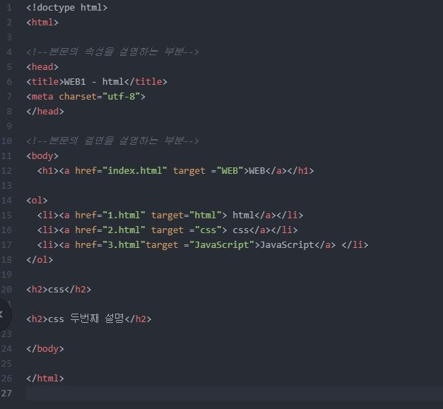

- html
- css
- JavaScript
HTML이란 무엇인가?
html 이란
hyper text markup language의 약자로 이제 슬슬 그 맨얼굴을 알게 되고 있다.
hyper text는 하나의 text에 아주 많은 정보를 담고 있기 때문에 이런 식으로 부르는 것 같고,
markup은 같은 html에서도 우리가 쓰는 기호 문자에 따라 다른 읽기방식을 지원하기 때문에
그것을 지정하는 방법이다.
그러므로 HTML이란 많은 정보가 담긴 문자들의 나열방식을 지정해 주어 우리가 읽을 수 있도록 해주는것
정도가 되겠다.
튼튼한 건물을 짓기 위해서는 다양한 요소들이 뒷받침되어야 한다.
흔들림없는 지반과 노동력, 건축할 수 있는 좋은 환경 등 중요하지 않은 요소가 없지만
그중에서도 단연 필수적인 2가지는 재료 와 설계도 이다.
html을 잘 제작하기 위해선 이를 구성하는 설계(문법의 각 순서와 자리, 필요이유)와 설계 내부에서 사용되는 재료(tag, css)
에 대해 훌륭히 이해하고 있어야 한다.
html의 뼈대란?
html은 컴퓨터의 언어이기 때문에 우리가 컴퓨터가 이해할 수 있도록 여러가지 문법을 이용해야 한다.
문법을 통해서 내가 나타내고자 하는 바를 컴퓨터로 구현할 수 있다.

사진1-내가 처음으로 짜 본 코드, 두근두근
html은 '<'과 '>' 안에 어떠한 명령을 가진 '태그' 라는 문법을 통해서 작동한다.
(사진1)을 보면, html의 전체적인 구조는 html태그 안에 head 태그와 body 태그로 구성된다.
html은 이것이 html2도 html5도 아닌 html 기본 버전이라는 것을 알려주는 태그이고,
그 안의 head는 이 html의 기본적인 속성이 어떻게 되는지,
body는 이 hrml을 어떻게 표현할 것인지를 설명하도록 지시하는 태그이다.
우리는 기본적인 제작 규칙에 대해 숙지하고 순서와 방법에 맞게 우리가 원하는 웹을 만들어갈 수 있다.
html의 기본재료, TAG
tag는 우리가 웹사이트를 더 명료하고 직관적으로 만들수 있는 기능을 제공한다.
앞으로 여기에다가 내가 태그 써보고 하면서 좀 이해를 도와가야 할 것 같다.
알아보고 싶은 태그 : style 태그 : css margin-top 이것도 뭔지 알아봐야
창을 축소/확대 함에 따라 글자가 밑으로 내려가거나 하는데
창 축소할 필요 없이 그냥 몇 자 이상 되면 아래로 내려가게 못하는지
그리고 그것도 궁금해 파이썬같은건 문법 틀리면 작동도 안되는데
html은 /body 이런걸로 마무리 안해줘도 그냥 작동되던데 뭐지 어떨 때 오류나는거지
고쳐야 할 거 하나더
위에 리스트 1~3은 눌러도 새 웹사이트로 안열리고 그냥 이동했으면 좋겠는데 그렇게 안되네 바꾸자